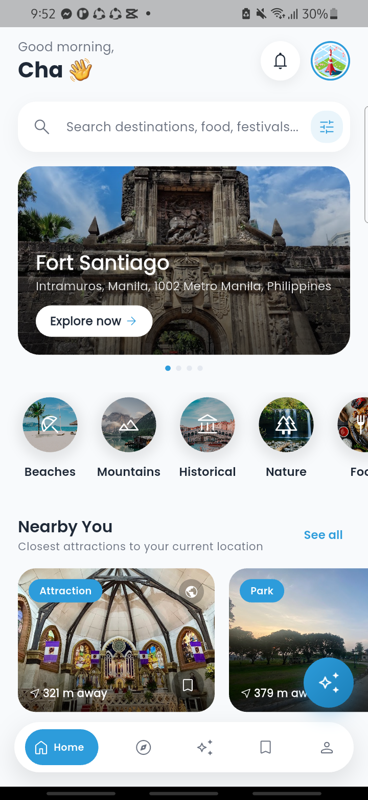

API Integration Documentation
TripNest PH — Week 5 Submission: API Integration & HTTP Requests
1. Project Overview
TripNest PH is a Flutter + Firebase travel discovery and trip-planning app for the Philippines. Travelers browse
tourist spots, restaurants, and festivals, save favorites, write reviews, and get AI-assisted itineraries. This
submission adds a live current-weather feature to every destination's details page — matching the
assignment's own "Tourism Website → current weather" example directly.
2. API Name & Endpoint(s) Used
| API | Open-Meteo — a free, open-source weather API that requires no API key or
registration (open-meteo.com). |
|---|
| Endpoint | GET
https://api.open-meteo.com/v1/forecast?latitude={lat}&longitude={lng}¤t=temperature_2m,relative_humidity_2m,weather_code&timezone=auto |
|---|
| Example call | GET https://api.open-meteo.com/v1/forecast?latitude=13.4125&longitude=122.5589¤t=temperature_2m,relative_humidity_2m,weather_code&timezone=auto
(coordinates for a sample tourist destination in the Bicol region) |
|---|
3. Sample JSON Response
{
"latitude": 13.391915,
"longitude": 122.5777,
"generationtime_ms": 0.54,
"utc_offset_seconds": 28800,
"timezone": "Asia/Manila",
"timezone_abbreviation": "GMT+8",
"elevation": 249.0,
"current_units": {
"time": "iso8601",
"interval": "seconds",
"temperature_2m": "°C",
"relative_humidity_2m": "%",
"weather_code": "wmo code"
},
"current": {
"time": "2026-08-11T08:45",
"interval": 900,
"temperature_2m": 27.1,
"relative_humidity_2m": 84,
"weather_code": 51
}
}
4. Explanation of Integration
Where the code lives:
| HTTP request + JSON parsing | lib/core/services/weather_service.dart
— WeatherService.getCurrentWeather() |
|---|
| Data model | lib/domain/models/current_weather.dart |
|---|
| UI widget | lib/core/widgets/details/current_weather_card.dart
— CurrentWeatherCard |
|---|
| Where it's shown | lib/presentation/details/tourist_details_screen.dart
— near the top of every destination's details page |
|---|
How it works, step by step:
CurrentWeatherCard is given a destination's stored latitude/longitude and calls
WeatherService.getCurrentWeather(latitude:, longitude:) in initState().- The service builds the request URL, sends an HTTP GET request via the
http
package, and waits up to 10 seconds for a response.
- The raw response body is parsed from JSON text into a Dart
Map with jsonDecode().
The relevant fields (temperature_2m, relative_humidity_2m, weather_code)
are extracted and validated.
- The numeric WMO
weather_code is translated into a human-readable condition ("Partly Cloudy",
"Rainy", etc.) and a matching icon key, then wrapped in a typed CurrentWeather object.
- The widget renders the result with a
FutureBuilder: a small spinner while loading, the
location name / temperature / condition / humidity once loaded, or an inline error message with a
Retry button if the request fails.
- A refresh icon lets the traveler re-fetch the latest reading at any time, without navigating away or
reloading the page.
How it improves the project: a destination's weather materially affects whether a trip is a
good idea right now (rain, extreme heat) — showing it directly on the details page, sourced live rather than
guessed, gives travelers a genuinely useful, real-time signal exactly where they're already deciding whether to
visit.
5. Error Handling
- Connection issue / timeout: the request is wrapped in a 10-second timeout; a timeout or
network failure is caught by the surrounding
FutureBuilder's error state.
- Invalid / non-200 response: any HTTP status other than 200 throws an explicit exception
with the status code, instead of silently showing stale or blank data.
- Unexpected JSON shape: if the expected
current object or its fields are
missing, a FormatException is thrown rather than crashing on a null value.
- User-facing recovery: every failure path renders the same friendly inline message
("Couldn't load current weather.") with a Retry button — no error dialog, no broken screen.
6. Screenshots

Fig. 1 — Live current weather displayed on the "Banaue Rice Terraces" destination's
details page: Location (Banaue Rice Terraces), Temperature (24°C),
Condition (Partly Cloudy), Humidity (83%) — captured live from a physical
Android device running the built app, confirming the HTTP GET request, JSON parsing, and UI display all
work end-to-end.

Fig. 2 — The app running live on a physical Android device (Home screen), confirming the
build works end-to-end beyond just this one feature.
Error state (not pictured): the error/retry branch was verified by code review rather than
a screenshot, since reliably forcing a live network failure on the physical test device also disconnects its
wireless debugging session. The relevant code is in
lib/core/widgets/details/current_weather_card.dart, lines showing the
snapshot.hasError branch of the FutureBuilder (a cloud-off icon, "Couldn't load
current weather." message, and a Retry button that calls setState to re-trigger the request).
7. Bonus Features Implemented
- Dynamic refresh without reloading the page — the refresh icon on the weather card
re-fetches live data in place via
setState, with no screen navigation or full page reload.
- Graceful degradation — the card only renders when a destination has stored coordinates,
and every failure mode has a dedicated, testable UI state (loading / error+retry / loaded).
8. Reflection
Integrating the Open-Meteo API gave TripNest PH a genuinely live, real-world data source instead of static
content — travelers now see the actual current conditions at a destination the moment they open its page,
which is far more useful than a description that never changes. The main challenge was structuring the
request so a failure never breaks the page: the existing forecast feature in this project silently swallows
errors (since weather is a "nice to have" there), but for this assignment I wanted the error path to be
visibly testable, so I had the new getCurrentWeather() method throw real exceptions and built a
dedicated loading/error/retry UI around it with FutureBuilder. Getting the JSON parsing right also
took care, since Open-Meteo's WMO weather codes are numeric and needed a small mapping table to turn into
readable conditions and icons rather than raw numbers. Overall, the integration was straightforward because
Open-Meteo requires no API key, which meant no extra credential-management work beyond making the HTTP call
itself.